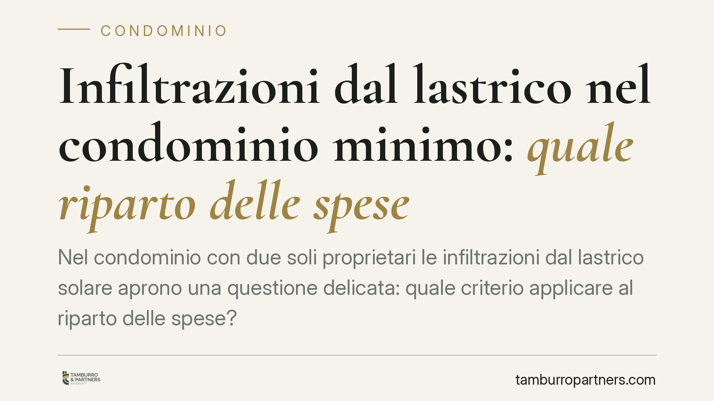

Infiltrazioni dal lastrico nel condominio minimo: quale riparto delle spese
Nel condominio con due soli proprietari le infiltrazioni dal lastrico solare aprono una questione delicata: quale criterio applicare al riparto delle spese? Il dibattito ruota attorno alla scelta tra art. 1126 c.c., seguito dalle Sezioni Unite, e art. 1125 c.c. La differenza incide in modo concreto su chi paga, e quanto, tra il titolare del lastrico e il proprietario sottostante.

Il punto di partenza: le Sezioni Unite del 2016
Quando si parla di lastrico solare in uso esclusivo, il riferimento resta Cass. Sez. Unite n. 9449 del 10 maggio 2016. Quella pronuncia ha chiarito che alle spese di riparazione e ricostruzione del lastrico di uso esclusivo si applica il criterio dell'art. 1126 c.c.: un terzo a carico di chi usa il lastrico in via esclusiva, due terzi a carico dei proprietari dei piani sottostanti coperti dal lastrico stesso.
La ratio è che il lastrico svolge una doppia funzione: da un lato serve chi ne ha l'uso esclusivo (calpestio, affaccio), dall'altro copre e protegge le unità sottostanti. Da qui la ripartizione asimmetrica 1/3–2/3.
La lettura alternativa fondata sull'art. 1125 c.c.
Una diversa impostazione propone di applicare l'art. 1125 c.c., dettato per i solai e le volte che dividono due piani sovrapposti. Quella norma prevede che le spese si dividano in parti uguali tra i proprietari dei due piani, salvo che la spesa riguardi il pavimento (a carico del proprietario superiore) o l'intonaco/soffitto (a carico dell'inferiore).
È un'estensione analogica: il lastrico verrebbe trattato non come copertura dell'edificio, ma come elemento strutturale divisorio tra la porzione superiore e quella inferiore, con conseguente riparto tendenzialmente paritario (50/50) per gli interventi sulla struttura.
Va detto con chiarezza: si tratta di una tesi interpretativa, non di un principio consolidato che sostituisce l'orientamento delle Sezioni Unite. Chi vuole sostenerla in giudizio deve indicare estremi precisi della pronuncia invocata e argomentare perché il caso concreto giustifichi l'applicazione dell'art. 1125 c.c. in luogo dell'art. 1126 c.c. L'assenza di riferimenti puntuali indebolisce la pretesa.
Lastrico di uso esclusivo o copertura comune?
Nel condominio minimo — due soli proprietari — la qualificazione del bene è decisiva.
- Se il lastrico (o il tetto) è comune a entrambi, le spese seguono la regola generale dell'art. 1123 c.c., in proporzione ai millesimi o, in un edificio a due, di norma per metà.
- Se il lastrico è in uso esclusivo di uno dei due proprietari e copre l'unità dell'altro, entra in gioco il criterio 1/3–2/3 dell'art. 1126 c.c. secondo le Sezioni Unite; la lettura ex art. 1125 c.c. resta ipotesi da dimostrare.
Prima di ogni conteggio va quindi accertata la titolarità e la funzione del manufatto: solo dopo si sceglie la norma applicabile.
Perché conta per chi vive in un condominio a due
Il condominio minimo è più diffuso di quanto sembri: villette bifamiliari, immobili suddivisi tra fratelli o coeredi, palazzine con due appartamenti sovrapposti. In questi contesti manca spesso l'amministratore e i rapporti sono diretti tra due persone, non di rado con vincoli familiari.
Un esempio: il proprietario del piano superiore ha un terrazzo di copertura in uso esclusivo; l'acqua filtra nell'appartamento sottostante. Con l'art. 1126 c.c. la spesa di rifacimento dell'impermeabilizzazione grava per due terzi sul proprietario inferiore (perché beneficia della funzione di copertura) e per un terzo sul titolare del terrazzo. Con l'art. 1125 c.c. la stessa spesa strutturale tenderebbe a dividersi a metà.
Su un intervento da 12.000 euro la differenza è tangibile: 4.000/8.000 secondo il primo criterio, 6.000/6.000 secondo il secondo. Da qui l'importanza di individuare correttamente la disciplina, evitando accordi o richieste basati su presupposti errati.
Cosa fare in concreto
- Verificate la titolarità del lastrico consultando atti di provenienza, regolamento e planimetrie: uso esclusivo o bene comune cambiano tutto.
- Distinguete il tipo di intervento: impermeabilizzazione e struttura seguono regole diverse rispetto a pavimentazione o finiture superficiali.
- Documentate le infiltrazioni con foto, perizia tecnica e datazione, prima di avviare qualsiasi confronto.
- Richiedete gli estremi esatti di ogni pronuncia citata da controparte: numero, sezione e anno. Una massima non identificata non fa prova del diritto vigente.
- Formalizzate per iscritto ripartizione e preventivi, così da fissare i presupposti dell'accordo o dell'eventuale contestazione.
Ogni condominio ha una storia a sé.
Se gestisci un'amministrazione e vuoi un confronto su una specifica questione condominiale, scrivi allo studio. Ti rispondiamo entro un giorno lavorativo.